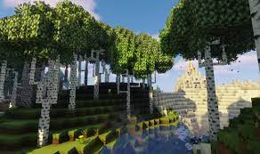
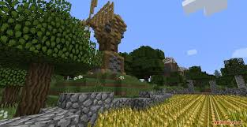

minecraft est un jeu survival sandbox créer par Mojang sorti officiellement en 2011 (et créer en 2009 sous forme de alpha/beta)
il y a 2 mode de jeu , créatif vous ète invisible et faite ce que vous vouler
Et survival ou vous dever survire et craft pour avancer dans le jeu
Minecraft posède un mode multijoueur sur le quelle on peut rejoindre des serveur es jouer a différent mode de jeu.
il y a bedwars, skywars, build-battle,hide'n'sike,et plein d'autre.
certain serveur sont moddés
Les mod servent à rajouter des élément dans le jeu (dimension,object)
il en existe des millier et pour faciliter leur instalation on peut
utiliser curseforge.
Ils ajoutent des infinité de possibilité.

voici un screenshot d'un modpack (RLcraft)
Les texture-packs servent à modifier les texture du jeu (ca peut ètre beau ou horrible) il en existe des milliers le plus connus étant faithful qui remplace les texture 16px en texture 32px.

Les shader eux vont "rajouter" du vent dans les feuille, dans l'eau et
des rayon de soleil.